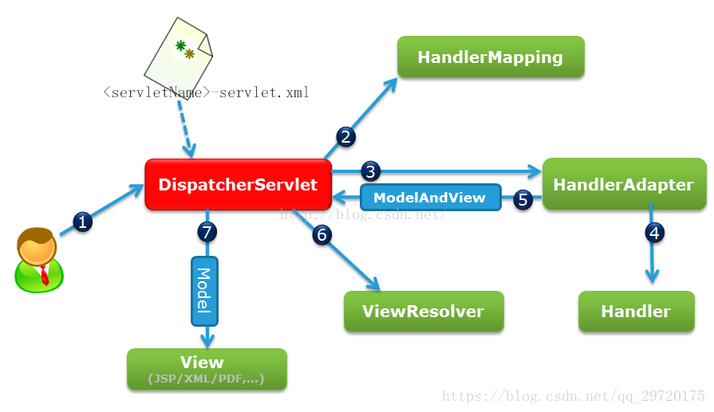

1. JDK、JRE、JVM
① JDK: Java Development kit Java 开发工具包
② JRE: Java Runtime Environment Java 运行环境
③ JVM: Java virtual Machine Java 虚拟机
2、简述Java程序编译和运行的过程
① Java编译程序将Java源程序翻译为JVM可执行代码–字节码，创建完源文件之后，程序会先被编译成 “.class” 文件。
② 在编译好的java程序得到“.class”文件后，使用命令java 运行这个 .class 文件，系统就会启动一个jvm进程，并找到主函数的入口，开始执行main函数。
3、八种基础数据类型及字节大小
① byte 1字节 8位
② short 2字节 16位
③ int 4字节 32位
④ long 8字节 64位
⑤ float 4字节 32位
⑥ double 8字节 64位
⑦ boolean 1位
⑧ char 2字节 16位
4、值传递和引用传递的区别
①值传递：值传递是将进行传递的值进行拷贝，然后对拷贝之后的值进行传递，传递过程前后不改变原值的大小；
②引用传递：引用传递是将需要传递值的地址进行传递，传递过程前后会改变原值的大小。
5、什么是方法重载、重写。
方法重载是指在一个类中定义多个同名的方法，但要求每个方法具有不同的参数的类型或参数的个数。
注：方法重载时，必须注意一下几点：
在使用重载时只能通过相同的方法名、不同的参数形式实现。不同的参数类型可以是不同的参数类型，不同的参数个数，不同的参数顺序（参数类型必须不一样）；
各个重载方法的参数列表必须不同
各个重载方法的返回值类型可以相同也可以不同，但是仅仅返回值类型不同的不是重载 例如：
public void change（int i）{} 与 public int change（int i）{} 不能成为方法的重载不能通过仅仅通过访问权限、返回类型、抛出的异常的不同而进行进行重载
重写
当一个类继承另一个类时，则可以拥有父类的成员方法和成员变量，在子类中，可以创建独有的成员，如果创建了一个与父类中相同名称，相同返回类型、相同参数列表的方法，只是方法体中的实现方法不同，以实现不同于父类的功能，这种方式就称为方法的重写，又称为方法的覆盖。
在重写方法时候，应该遵循以下规则：
- 参数列表必须完全和被重写方法的参数列表一致
- 返回类型必须完全和被重写方法的返回类型一致
- 访问修饰符的限制一定要大于被重写方法的访问修饰符
（public>protected>default>private）`- 重写的方法一定不能抛出新的检查异常或者比被重写方法声明更加宽泛的检查型异常。
例如：父类的方法中声明了一个检查异常 IOException,在重写这个方法时候，就不能抛出Exception，只能抛出IOException的字类异常，可以抛出非检查类的异常。
6、4种访问控制符区别描述
作用域 当前类 同包 子类 其他
public √ √ √ √
protected √ √ √ ×
default √ √ × ×
private √ × × ×
类的成员不写访问修饰时默认为default。默认对于同一个包中的其他类相当于公开（public），对于不是同一个包中的其他类相当于私有（private）。受保护（protected）对子类相当于公开，对不是同一包中的没有父子关系的类相当于私有。
① Private（当前访问权限）：被声明为private的成员只能被当前类中的其他成员访问，不能在类外看到；
② 缺省（包访问权限）：如果一个类或类的成员前没有访问控制符，则获得缺省的访问权限，缺省的可以被同一包中的所有类访问；
③ Protected（子类访问权限）：被声明为protected的成员既可以被同一个包中的其他类访问，也可以被不同包中的子类访问；
④ Public（公共访问权限）：被声明为public的成员可被同一包或不同包中的所有类访问，即public访问修饰符可以使类的特性公用于任何类。
7、写出8个基本数据类型提供了对应的封装类
① byte Byte 字节
② short Short 短整型
③ int Integer 整型
④ long Long 长整型
⑤ char Character 字符型
⑥ float Float 单精度浮点型
⑦ double Double 双精度浮点型
⑧ boolean Boolean 布尔型
8、什么是装箱和拆箱
①装箱：指将基本类型数据值转换成对应的封装对象，即将栈中的数据封装成对象存放到堆栈中；
②拆箱：拆箱是装箱的反过程，是封装的对象转换成基本类型的数据值，即将堆中的数据值存放到栈中的过程。
9、String 和StringBuilder、StringBuffer的区别
① String创新的字符串建的字符串是不可变的，如果改变字符串变量的值，是在内存中创建一个 新的字符串，字符串变量将引用新创建的字符串地址，而原来的字符串在内存中依然存在且内容 不变，直至java的垃圾回收系统对其进行销毁；
②StringBuilder创建一个可变的字符串，StringBuilder没有实现线程安全，因此性能较好。
③StringBuffer是线程安全。
对于三者使用的总结：1.如果要操作少量的数据用 = String
2.单线程操作字符串缓冲区 下操作大量数据 = StringBuilder
3.多线程操作字符串缓冲区 下操作大量数据 = StringBuffer
10、oop
面向对象的三大特性：封装、继承、多态
11、&&和&区别，||和|区别？
a) &&和||是短路与，短路或，当左边的表达式能判断当前结果，则不判断右边的表
达式。
b) 而& 和|则将两边的表达式都运算完毕后，再算结果。
& 运算：相当于十进制 相同位做加法的1/2
0101 & 0011 结果：二进制0001 十进制 (2^0 +2^0)/2 这里的”^”代表次幂
| 运算：相当于十进制 相同位做加法的1/2与不同位做加法求和
0101 | 0011 结果：二进制0111 十进制 (2^0 +2^0)/2 +(2^2 +2^1)
^ 运算：相当于十进制不同位做加法
0101 ^ 0011 结果：二进制0110 十进制（2^2 + 2^1 ）
12、解释内存中的栈（stack）、堆(heap)和静态存储区的用法。
答：通常我们定义一个基本数据类型的变量，一个对象的引用，还有就是函数调用的现场保存都使用内存中的栈空间；而通过new关键字和构造器创建的对象放在堆空间；程序中的字面量（literal）如直接书写的100、“hello”和常量都是放在静态存储区中。栈空间操作最快但是也很小，通常大量的对象都是放在堆空间，整个内存包括硬盘上的虚拟内存都可以被当成堆空间来使用。
String str = new String(“hello”);
上面的语句中str放在栈上，用new创建出来的字符串对象放在堆上，而“hello”这个字面量放在静态存储区。
补充：较新版本的Java中使用了一项叫“逃逸分析“的技术，可以将一些局部对象放在栈上以提升对象的操作性能。
13 、抽象类（abstract class）和接口（interface）有什么异同?
答：抽象类和接口都不能够实例化，但可以定义抽象类和接口类型的引用。一个类如果继承了某个抽象类或者实现了某个接口都需要对其中的抽象方法全部进行实现，否则该类仍然需要被声明为抽象类。接口比抽象类更加抽象，因为抽象类中可以定义构造器，可以有抽象方法和具体方法，而接口中不能定义构造器而且其中的方法全部都是抽象方法。抽象类中的成员可以是private、默认、protected、public的，而接口中的成员全都是public的。抽象类中可以定义成员变量，而接口中定义的成员变量实际上都是常量。有抽象方法的类必须被声明为抽象类，而抽象类未必要有抽象方法。
- 抽象类中可以没有抽象方法；接口中的方法必须是抽象方法；
- 抽象类中可以有普通的成员变量；接口中的变量必须是 static final 类型的，必须被初始化 , 接口中只有常量，没有变量。
- 抽象类只能单继承，接口可以继承多个父接口；
- Java8 中接口中会有 default 方法，即方法可以被实现。
14、GC 是什么？为什么要有GC？
答：GC是垃圾收集的意思，内存处理是编程人员容易出现问题的地方，忘记或者错误的内存回收会导致程序或系统的不稳定甚至崩溃，Java提供的GC功能可以自动监测对象是否超过作用域从而达到自动回收内存的目的，Java语言没有提供释放已分配内存的显示操作方法。Java程序员不用担心内存管理，因为垃圾收集器会自动进行管理。要请求垃圾收集，可以调用下面的方法之一：System.gc() 或Runtime.getRuntime().gc() ，但JVM可以屏蔽掉显示的垃圾回收调用。
垃圾回收可以有效的防止内存泄露，有效的使用可以使用的内存。垃圾回收器通常是作为一个单独的低优先级的线程运行，不可预知的情况下对内存堆中已经死亡的或者长时间没有使用的对象进行清除和回收，程序员不能实时的调用垃圾回收器对某个对象或所有对象进行垃圾回收。在Java诞生初期，垃圾回收是Java最大的亮点之一，因为服务器端的编程需要有效的防止内存泄露问题，然而时过境迁，如今Java的垃圾回收机制已经成为被诟病的东西。移动智能终端用户通常觉得iOS的系统比Android系统有更好的用户体验，其中一个深层次的原因就在于Android系统中垃圾回收的不可预知性。
补充：垃圾回收机制有很多种，包括：分代复制垃圾回收、标记垃圾回收、增量垃圾回收等方式。标准的Java进程既有栈又有堆。栈保存了原始型局部变量，堆保存了要创建的对象。Java平台对堆内存回收和再利用的基本算法被称为标记和清除，但是Java对其进行了改进，采用“分代式垃圾收集”。这种方法会跟Java对象的生命周期将堆内存划分为不同的区域，在垃圾收集过程中，可能会将对象移动到不同区域：
伊甸园（Eden）：这是对象最初诞生的区域，并且对大多数对象来说，这里是它们唯一存在过的区域。
幸存者乐园（Survivor）：从伊甸园幸存下来的对象会被挪到这里。
终身颐养园（Tenured）：这是足够老的幸存对象的归宿。年轻代收集（Minor-GC）过程是不会触及这个地方的。当年轻代收集不能把对象放进终身颐养园时，就会触发一次完全收集（Major-GC），这里可能还会牵扯到压缩，以便为大对象腾出足够的空间。
与垃圾回收相关的JVM参数：
-Xms / -Xmx — 堆的初始大小 / 堆的最大大小
-Xmn — 堆中年轻代的大小
-XX:-DisableExplicitGC — 让System.gc()不产生任何作用
-XX:+PrintGCDetail — 打印GC的细节
-XX:+PrintGCDateStamps — 打印GC操作的时间戳
15、Java 中的final关键字有哪些用法？
答：(1)修饰类：表示该类不能被继承；(2)修饰方法：表示方法不能被重写；(3)修饰变量：表示变量只能一次赋值以后值不能被修改（常量）。
16、final, finally, finalize 的区别?
答：final：修饰符（关键字）有三种用法：如果一个类被声明为final，意味着它不能再派生出新的子类，即不能被继承，因此它和abstract是反义词。将变量声明为final，可以保证它们在使用中不被改变，被声明为final 的变量必须在声明时给定初值，而在以后的引用中只能读取不可修改。被声明为final 的方法也同样只能使用，不能在子类中被重写。finally：通常放在try…catch的后面构造总是执行代码块，这就意味着程序无论正常执行还是发生异常，这里的代码只要JVM不关闭都能执行，可以将释放外部资源的代码写在finally块中。finalize：Object类中定义的方法，Java中允许使用finalize() 方法在垃圾收集器将对象从内存中清除出去之前做必要的清理工作。这个方法是由垃圾收集器在销毁对象时调用的，通过重写finalize() 方法可以整理系统资源或者执行其他清理工作。
17、abstract class和interface有什么区别?
①抽象类和接口都可以有数据和方法，但接口的数据必须是常量，方法只能声明不能实现。
②接口可以多重实现，抽象类只能单一继承。
③接口类只能是功能的定义，不能创建接口类的实例，抽象类也不能创建实例，但是可以有自己的内部实现
18、JSP的内置对象及方法。
request 用户端请求，此请求会包含来自GET/POST请求的参数
response 网页传回用户端的回应
pageContext 网页的属性是在这里管理
session 与请求有关的会话期
application servlet 正在执行的内容
out 用来传送回应的输出
config servlet的构架部件
page JSP网页本身
exception 针对错误网页，未捕捉的例外
19、 j2ee常用的设计模式？说明工厂模式。
Factory（工厂模式）， Builder（建造模式）， Factory Method（工厂方法模式），
Prototype（原始模型模式），Singleton（单例模式）， Facade（门面模式），
Adapter（适配器模式）， Bridge（桥梁模式）， Composite（合成模式），
Decorator（装饰模式）， Flyweight（享元模式）， Proxy（代理模式），
Command（命令模式）， Interpreter（解释器模式）， Visitor（访问者模式），
Iterator（迭代子模式）， Mediator（调停者模式）， Memento（备忘录模式），
Observer（观察者模式）， State（状态模式）， Strategy（策略模式），
Template Method（模板方法模式）， Chain Of Responsibleity（责任链模式）单例模式：一个类Class只有一个实例存在
观察者模式：一个或多个观察者对象监察一个主题对象。这样一个主题对象在状态上的变化能够通知所有的依赖于此对象的那些观察者对象，使这些观察者对象能够自动更新
适配器模式：使得原本由于接口不兼容而不能一起工作的那些类可以在一起工作
代理模式：为其他对象提供一种代理以控制对这个对象的访问
工厂模式：根据提供的数据生成一组类中某一个类的实例，通常这一组类有一个公共的抽象父类并且实现了相同的方法，但是这些方法针对不同的数据进行了不同的操作
20、SpringMVC流程、原理
SpringMVC流程
1、 用户发送请求至前端控制器DispatcherServlet。
2、 DispatcherServlet收到请求调用HandlerMapping处理器映射器。
3、 处理器映射器找到具体的处理器(可以根据xml配置、注解进行查找)，生成处理器对象及处理器拦截器(如果有则生成)一并返回给DispatcherServlet。
4、 DispatcherServlet调用HandlerAdapter处理器适配器。
5、 HandlerAdapter经过适配调用具体的处理器(Controller，也叫后端控制器)。
6、 Controller执行完成返回ModelAndView。
7、 HandlerAdapter将controller执行结果ModelAndView返回给DispatcherServlet。
8、 DispatcherServlet将ModelAndView传给ViewReslover视图解析器。
9、 ViewReslover解析后返回具体View。
10、DispatcherServlet根据View进行渲染视图（即将模型数据填充至视图中）。
11、 DispatcherServlet响应用户。
原理

21、 如何解决POST请求中文乱码问题，GET的又如何处理呢？
在web.xml中加入：
<filter>
<filter-name>CharacterEncodingFilter</filter-name>
<filter-class>org.springframework.web.filter.CharacterEncodingFilter</filter-class>
<init-param>
<param-name>encoding</param-name>
<param-value>utf-8</param-value>
</init-param>
</filter>
<filter-mapping>
<filter-name>CharacterEncodingFilter</filter-name>
<url-pattern>/*</url-pattern>
</filter-mapping>以上可以解决post请求乱码问题。对于get请求中文参数出现乱码解决方法有两个：
修改tomcat配置文件添加编码与工程编码一致，如下：
<ConnectorURIEncoding="utf-8" connectionTimeout="20000" port="8080" protocol="HTTP/1.1" redirectPort="8443"/>另外一种方法对参数进行重新编码：
String userName = new String(request.getParamter("userName").getBytes("ISO8859-1"),"utf-8")ISO8859-1是tomcat默认编码，需要将tomcat编码后的内容按utf-8编码
22、SpringMVC与Struts2的主要区别？
①springmvc的入口是一个servlet即前端控制器，而struts2入口是一个filter过虑器。
②springmvc是基于方法开发，传递参数是通过方法形参，可以设计为单例或多例(建议单例)，struts2是基于类开发，传递参数是通过类的属性，只能设计为多例。
③Struts采用值栈存储请求和响应的数据，通过OGNL存取数据， springmvc通过参数解析器是将request对象内容进行解析成方法形参，将响应数据和页面封装成ModelAndView对象，最后又将模型数据通过request对象传输到页面。 Jsp视图解析器默认使用jstl。
23、AOP
通知： 就是我们编写的希望Aop时执行的那个方法。我们通过Aop希望我们编写的方法在目标方法执行前执行，或者执行后执行。
切点：切点就是我们我们配置的满足我们条件的目标方法。比如我们规定：名字前面是select开头的才执行我们自定义的通知方法。那么这些select开头的方法就是切点。
连接点：连接点可以说是切点的全集。切点是连接点的子集。也可以理解为，连接点是我们没有定义那个select开头规则时，满足条件的全部的方法。
程序执行过程中能够应用通知的所有点。
切面：切面是切点和通知的组合称谓，就是变相给组合起了个名字。
通常使用明确的类或者方法来指定这些切点。
AspectJ中的切入点匹配的执行点称作连接的（Join Point），在通知方法中可以声明一个JoinPoint类型的参数。通过JoinPoint可以访问连接点的细节。下面简要介绍JponPoint的方法：
1.java.lang.Object[] getArgs()：获取连接点方法运行时的入参列表；
2.Signature getSignature() ：获取连接点的方法签名对象；
3.java.lang.Object getTarget() ：获取连接点所在的目标对象；
4.java.lang.Object getThis() ：获取代理对象本身；
ProceedingJoinPoint继承JoinPoint子接口，它新增了两个用于执行连接点方法的方法：
5.java.lang.Object proceed() throws java.lang.Throwable：通过反射执行目标对象的连接点处的方法；
6.java.lang.Object proceed(java.lang.Object[] args) throws java.lang.Throwable：通过反射执行目标对象连接点处的方法，不过使用新的参数替换原来的参数。
24、值传递引用传递
- 基本数据类型传值，对形参的修改不会影响实参；
- 引用类型传引用，形参和实参指向同一个内存地址（同一个对象），所以对参数的修改会影响到实际的对象；
- String, Integer, Double等immutable的类型特殊处理，可以理解为传值，最后的操作不会修改实参对象。
25.集合
---| Itreable 接口 实现该接口可以使用增强for循环
---| Collection 描述所有集合共性的接口
---| List接口 有序，可以重复，有角标的集合
---| ArrayList
---| LinkedList
---| Set接口 无序，不可以重复的集合
---| HashSet 线程不安全，存取速度快。底层是以hash表实现的。
---| TreeSet 红-黑树的数据结构，默认对元素进行自然排序（String）。如果在比较的时候两个对象返回值为0，那么元素重复。